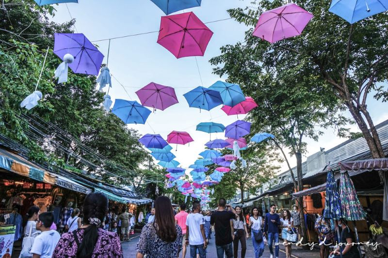
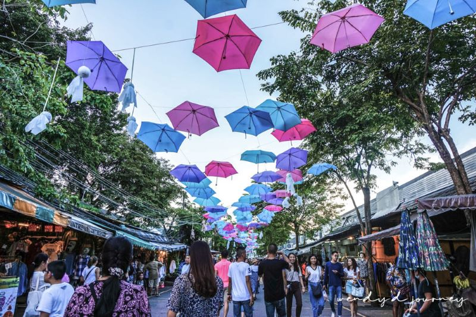

恰圖恰市集
恰圖恰週末市集是旅客來到泰國曼谷自由行時必去的曼谷市集。走進恰圖恰市集，市集集結了超過 15,000 個攤販，從特色物產、藝術品、古董、手工藝品甚至花卉、寵物用品都應有盡有，恰圖恰市集有名到連我這個對於泰國沒有什麼情分的人都想朝聖一次，就知道恰圖恰市集的魅力所在了。五花八門的商品讓人逛一圈市集就滿載而歸，當然荷包也會整個瘦了一圈，是到曼谷旅遊時千萬不可錯過的好逛市集。
恰圖恰週末市集是旅客來到泰國曼谷自由行時必去的曼谷市集。走進恰圖恰市集，市集集結了超過 15,000 個攤販，從特色物產、藝術品、古董、手工藝品甚至花卉、寵物用品都應有盡有，恰圖恰市集有名到連我這個對於泰國沒有什麼情分的人都想朝聖一次，就知道恰圖恰市集的魅力所在了。五花八門的商品讓人逛一圈市集就滿載而歸，當然荷包也會整個瘦了一圈，是到曼谷旅遊時千萬不可錯過的好逛市集。
